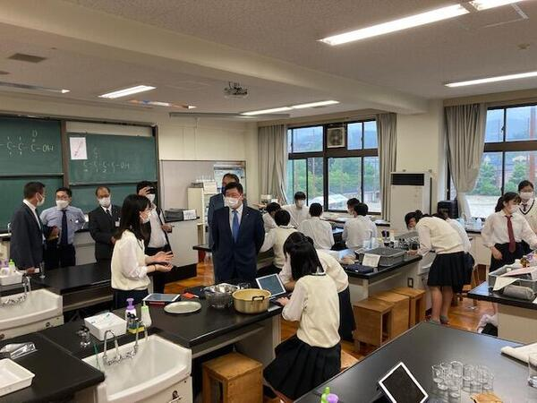

SAGANO BLOG
- >
- SAGANO BLOG
- >
- その他
2022年08月04日
８月１日、表題のセミナーが実施され、１･２年生計35名が参加しました。
午前中は大阪大学の川畑貴裕教授に嵯峨野高校までお越しいただき、原子核についての御講義をいただきました。原子核の基礎・核エネルギー・そして宇宙のはじまりから如何にして「重い」原子核が生まれたかについて、非常に高度な内容をわかりやすくお話ししていただきました。
川畑先生御講義 ＠嵯峨野高校
昼食後、大型バスに川畑先生も同乗して大阪大学核物理研究センターへ移動しました。
到着後、卓姸秀教授から大阪大学の成り立ちと概要についてご説明いただいたあと、核物理研究センターの保坂淳教授から、物理学とは何か・小さな原子核を研究するためになぜ大きな装置「加速器」が必要なのか御講義いただきました。
保坂先生御講義 ＠阪大核物理研究センター
福田先生御講義 ＠阪大核物理研究センター
いよいよ加速器の見学です。まず核物理研究センターの福田光宏教授から加速器の概要や、加速器が原子核の研究だけでなく、現在ガン治療薬の原料として注目されている原子核 211At（アスタチン211）の生成にも用いられてアルファ線治療薬の製造に役立てられていることなど、医療の世界でも大きな役割を果たしていることを御講義いただきました。
その後、福田先生と川畑先生に説明を御講義いただきながら加速器を見学しました。核物理研究センターは、国内のサイクロトロン加速器施設のなかで２番目に大きな施設であり、生徒はそのスケールに圧倒されていました。
2022年08月02日
蝉の大合唱をコーラスに、グランドからはノックの金属音
北棟の窓からは管楽器のチューニング音が聞こえます。
嵯峨野高校も本格的な夏休みに突入しています。通常の（教科）学習は小休止
高校の学習はまだまだ基礎的な内容が多く、学んだ内容を定着させるために、地道な繰り返しが必要になります。
特に1、2年生の学習では、正直あまり楽しくないことも少なくありません。
覚えることも多く、やらされている感じに陥りがちです。
「リベラルアーツ」とは、「専門科目」に対しての、単なる「教養科目」ではなく、ギリシア・ローマ時代に起源を持つ、正に「自由人として生きるための学問」です。人間を解放し自由にしてくれる主体的な学びです。
現代人は様々な観点から評価されます。学生時代だけではなく、社会に出てからも。人は少しでも良い評価を得ようと対応（努力）してしまうものです。つい正解をのみ求め、評価に縛られる不自由な学びになりがちです。
高校時代に、自分を多様な世界へと解き放ち、新しい自分を発見させてくれる学びにも踏み出しましょう。
少しまとまった時間が創れるのが夏休みです。いろんなジャンルの、いろんなスタイルの学びに挑戦してみてください。
いつもの教室を飛び出して、嵯峨野高校サマーセミナー開講中
嵯峨野高校生諸君、夏こそ「よく学び、よく鍛え、よく遊ぼう」
自ら新しい扉を開く
2022年08月01日
７月31日（日）に実施された第４回高等学校軽音楽コンテスト近畿北陸大会において、３年生のバンド kinari が奨励賞を受賞しました。
何ケ月も練習し続けた椎名林檎の難曲を楽しみながら演奏することができ、審査員の先生方からは構成のアレンジを褒めていただきました。
動画審査で選ばれた各都道府県の強豪が集まるこの大会で２年連続入賞でき、１・２年生にとっても励みになる結果となりました。
応援に来てくださった保護者の皆様、ありがとうございました。
2022年07月29日
酷暑の中の作業、頭が下がります。心から感謝です。
before / after
ゴミ集積場の伐採された枝葉の横には竹刀の束が
きちんと並べられたその有様に、"心"が垣間見えます。
武道（スポーツ）に打ち込むことは単に武術（スキル）、体力がつくだけではなく、
姿勢、礼節、感謝の心を会得すること
指導者（部顧問）も常にそんな思いを抱きつつ
校舎内でも
次の人のために、を思いやる心が感じ取れました。
2022年07月29日
７月28日（木）にプログラミング体験セミナーを実施しました。
micro:bitを使って、プログラミングを体験することが目的でしたが、参加した１年生たちは予想以上に飲み込みが早く、基礎的なプログラムの書き方を１時間ほど練習しただけで、シューティングゲームや早押しゲーム、記号を記憶するゲームなど、それぞれあっという間にオリジナルのゲームを作ってしまいました。
セミナーは３時間で終了。
もっとやりたいという声があがったので、夏休み中micro:bitを貸し出すことにしました。
教えなくてもどんどん学んでいきますね。
2022年07月29日
７月28日（木）の午後に、１・２年生の希望者を対象に本校のサマーセミナーの１つである「ホームページ作成セミナー」を実施しました。
ホームページの作成には、「HTML」と呼ばれる言語が使われますが、生徒たちはまずそのしくみについて学びました。その後、さらに細かく書式などを設定することができる「スタイルシート（CSS）」について学習しました。
ひたすら「タグ」と呼ばれるものを打ち込んでいくのですが、生徒たちは資料を読みながら黙々と取り組んでいました。
少し難しい内容だったかもしれませんが、ホームページがどのように作られているかを知るよい機会になったのではないかと思います。
2022年07月28日
ホームページで調べただけではわからない、実際に通っている大学生からの情報を、皆メモをとりながら真剣に聴いています。


{kind=link}
{kind=link}
{kind=link}
{kind=link}
{kind=link}
{kind=link}
{kind=link}
{kind=link}
{kind=link}
{kind=link}
{kind=link}
{kind=link}
{kind=link}
{kind=link}
{kind=link}
{kind=link}
{kind=link}
{kind=link}
{kind=link}
{kind=link}
{kind=link}
{kind=link}
{kind=link}
{kind=link}
{kind=link}
{kind=link}
{kind=link}
{kind=link}
{kind=link}
{kind=link}
{kind=link}
{kind=link}
{kind=link}
{kind=link}
{kind=link}
{kind=link}
{kind=link}
{kind=link}
{kind=link}
{kind=link}
{kind=link}
大学の紹介だけでなく、高校生へ熱いメッセージを送る卒業生たち。
好きなこと、興味のあることを自分から行動して見つけてほしい。
本気で取り組まないと、好きかどうかなんてわからない。今している勉強をしっかりやろう！
好きなことは変わっていくものだから、そのときの自分の思いで選択すれば大丈夫。
得意や苦手を理由にするのではなく、やりたいかどうかで決めた方がいい。
たくましく成長した卒業生の気持ちのこもった言葉が、進路のことで悩む在校生の胸に響きます。
生徒の感想文にはこんな言葉が―
先輩の言葉に救われました。ずっと悩んでモヤモヤしていたけど、気が晴れました。本当にありがとうございます。嵯峨野の今の学びを全力で楽しみたいです！
2022年07月25日
7月19日（火）、国際交流委員の１．2年生19名が、
韓国のコクソン高校１～3年生とOnlineで交流会をしました。
6月に続いて今年度2回目となった今回のコクソン高校との交流では、
コクソン高校の生徒から韓国の文化・言語・観光地などについて
クイズを交えながらプレゼンしてもらいました。
本校の生徒からも次々に質問が飛び出し、
あっという間に1時間が終わってしまいました。
次回は、本校生徒が日本についてのプレゼンを発表します。


{kind=link}
{kind=link}
2022年06月27日
23日(木)に人権学習として、佛教大学副学長 原清治 教育学部教授に『ネット社会と高校生の人権』をテーマに御講演いただきました。
京都府の高校生のデータを用いて、高校生とネット社会とのかかわりやネットいじめが起こる構造などの話を聞き、生徒たちは自分たちと大きくかかわっている問題であると強く意識づけられたようです。新型コロナウイルス感染症の影響で生活スタイルが変化したことも、大きな影響があるそうです。来週から活用するタブレット端末の扱い方についても各自が考えるきっかけとなりました。
３年間を通して、人権について深く考え、高い人権意識を持つように学習を進めていきます。
{kind=link}
{kind=link}
{kind=link}
2022年06月24日
6月21日（火）に田中英之文部科学副大臣が探究活動の視察のために来校されました。理数分野のスーパーサイエンスラボの活動を視察され、生徒たちと活発に交流されていました。副大臣から「探究活動は楽しいですか？」と問われた生徒は、迷わず「はい」と答えていました。副大臣からは、興味をもって一生懸命取り組んでいる様子は素晴らしいですねいう感想をいただきました。

{kind=link}
化学の実験室で生徒の活動を視察されている田中副大臣（中央）
2022年06月21日
6月13日(月)～17日(金)に、第1回環境美化週間として生徒一人ひとりの美化意識を向上させる取り組みを各クラスの保健美化委員を中心におこないました！
主な内容としては、毎日の清掃状況をチェックする美化点検や、
校内で咲いているアジサイを教室に飾る取り組みを行いました。
{kind=link}
教室に飾るアジサイを選ぶ保健美化委員の皆さん
抜群のセンスを発揮しています！！
{kind=link}
{kind=link}
教室にお花があると雨で憂鬱な気持ちも晴れる気がします。
また、環境美化週間の一環として、
3年生はゴミの分別意識を高めるために掲示するポスターを作成しました！
2年生は現在ゴミの分別や減量を呼びかける「嵯峨野保健たより」を作成中です。
5月26日(金)には講師の米沢武先生をお招きし、体育館で歯科講話を行っていただきました。
そこで1年生は講話の内容をまとめた「嵯峨野保健たより」を発行しました。
{kind=link}
{kind=link}
積極的に質問をする生徒も多かったです！
環境美化週間が終わっても、一人ひとりが周りをキレイにする意識を持って、学校環境を快適に保てるように努めていってほしいと思います。
2022年06月08日
放送部25年連続全国大会出場！
６月４日，５日と実施された第61回京都府高等学校放送コンテスト兼第69回ＮＨＫ杯全国高校放送コンテスト京都大会の朗読部門において２年生女子部員が３位，２年生男子部員が５位となり，ともに全国大会出場を決めました。
これで放送部の全国大会出場は25年連続となります。また，朗読部門において本校から２名が全国大会に出場するのは13年振りとなります。
この後は番組部門の結果発表もありますので，個人･番組の両部門での全国大会出場を目指します！
{kind=link}
2022年05月27日
５月２７日(金)６・７限、アカデミックラボの第５回の授業です。
ソーシャルビジネスラボでは、日本政策金融公庫の職員さんを再度お招きし、ビジネスプランシートの作成について具体的な事例をもとに考えるワークショップを実施していただきました。ビジネスのターゲットになる顧客の想定のポイントや収支計画のつくり方をレクチャーしていただき、ビジネスを考える面白さと難しさを実感しました。
生徒たちも打ち解けてきたので、意見が活発に出てくるようになりました。引き続き、ビジネスプラン作りに取り組んでいきます。
{kind=link}
2022年04月18日
４月１８日（月）５限に京都こすもす科専修コースの１年生に対してSSL（スーパーサイエンスラボ）Ⅰのガイダンスが行われました。
SSLは本校京都こすもす科専修コースの生徒が３年間をかけて、生徒それぞれが主体的に課題を設定して行う探究活動です。すでにわかっていることや調べてすぐにわかることではなく、誰も確かめたことがない、どこにも答えが書かれていないことを明らかにしようという取組です。
本日のガイダンスでは園山 博 副校長先生から、SSLを始めるにあたり、よい探究活動ができるように、まずは身の周りの自然の事物や現象についてよくみて考え、気づいたことをまとめることから始めましょうという話がありました。
{kind=link}
{kind=link}
{kind=link}
2022年01月24日
１月１９日（水）に金剛能楽堂で、２年生を対象に古典芸能鑑賞を行いました。京都の伝統文化に親しむことを目的としています。
前半に、狂言『附子（ぶす）』が上演されました。主人は、附子という毒が入っている桶に近づかないようにと言い置いてでかけましたが、太郎冠者と次郎冠者はそれが砂糖だと気づき、全部平らげてしまいます。主人に食べたわけを話すのですが・・・。茂山千五郎先生（太郎冠者）、茂山茂先生（次郎冠者）が生き生きと演じてくださいました。会場は笑いで包まれました。
{kind=link}
後半は、源氏物語を題材とする能『葵上』を鑑賞しました。シテは金剛龍謹先生で、六条御息所の嫉妬心や恨む気持ち、そして鬼となった生霊のおそろしさを存分に味わわせていただきました。
金剛能楽堂の荘厳な空間で、京都の伝統文化である能と狂言の一流の先生方による上演でした。生徒たちにとって貴重な経験となりました。
{kind=link}
{kind=link}
2021年12月23日
12月17日(金)18日(土)の２日間、本校で芸術文化展を実施しました。この取組は、芸術科、家庭科、文化系クラブの発表の場として毎年行われています。今年度も感染症対策を行いながらの実施となりました。
美術部２年部長がポスターのデザインを担当しました。
{kind=link}
躍動感があるイラストとインパクトのある文字のレイアウトで目を引くデザインです。
展示部門参加の教科・クラブの様子です。
家庭科は毎年おなじみの刺し子ティッシュケースの展示です。
{kind=link}
{kind=link}
今年も力作揃いでした。「一番欲しいと思う作品はどれ？」という投票箱が設置されていました。どの作品も素敵なデザインで丁寧に制作されているので、生徒たちは１つ１つの作品をじっくり見ながら投票していました。
華道部は、校内各所に作品を展示しました。
{kind=link}
{kind=link}
季節感のある華やかな作品が校舎を彩りました。
文芸部は毎年発行している部誌のアーカイヴの展示です。
{kind=link}
１０月に講演会に来て頂いた本校卒業生で小説家の武田綾乃さんが文芸部に所属していた当時の部誌の展示もありました。
嵯峨野高校の文芸部の歴史と伝統を感じる展示でした。
写真部は秋の風景などを撮影した作品を展示しました。
{kind=link}
放送部と狂言部は動画上映という形で参加しました。
{kind=link}
{kind=link}
放送部は歴代部員制作のドラマやドキュメンタリー、狂言部は１２月１２日(日)に行われた「嵯峨野高校狂言の会」の模様を上映しました。生徒たちは立ち止まって見入っていました。
〒616-8226
京都市右京区常盤段ノ上町15番地
TEL 075-871-0723 FAX 075-871-0724
E-mail [email protected]
Copyright (C) 京都府立嵯峨野高等学校 All Rights Reserved.